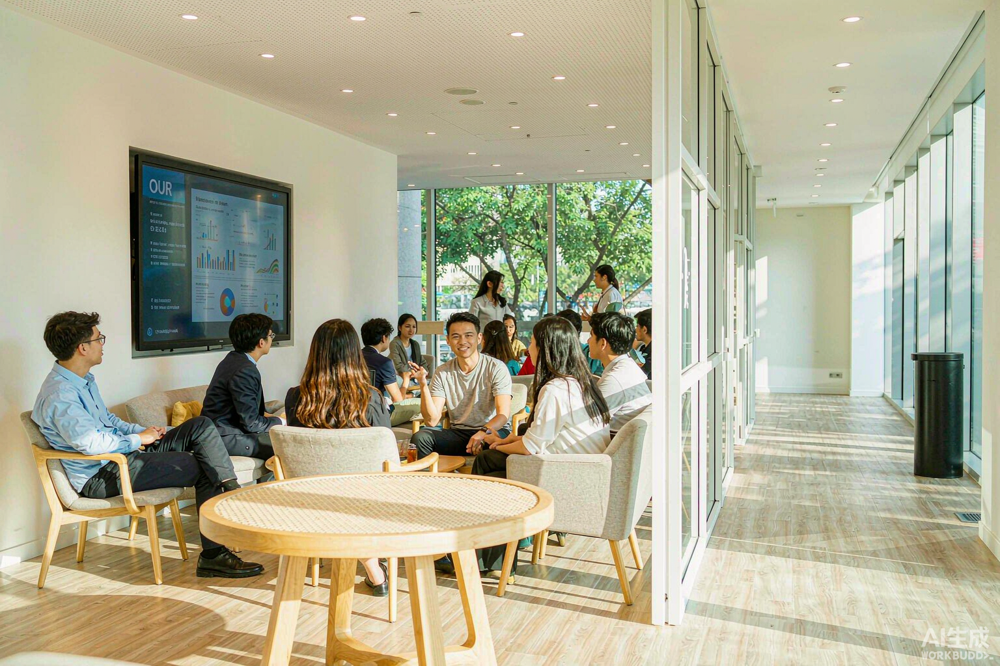

湾区（广东）数字经济研究院
BAY AREA DIGITAL ECONOMY ACADEMY (GUANGDONG)

首页
/ 网站地图
网站地图
收录研究院官网全部页面，点击任意条目可直接进入对应页面。
主要页面
关于研究院
人工智能
联系我们
名片 · 皮伟 执行院长
名片 · 陈标新 研究员
跨境电商
数字经济
首页 · 数字经济 · 产业学院 · 跨境电商 · 人工智能
产业学院
行业资讯
国际教育
推荐项目 · 信息科学硕士 2027
研究院动态
研究分析
招生项目
云南财经大学 × 英国爱丁堡龙比亚大学信息科学硕士项目 2027 招生简章
研究分析
订单硕士来了：企业坐上培养桌，专硕从学历竞争走向岗位竞争
从朱元璋到李自成：打下来靠胆识，守得住靠秩序
从教育部长辞职看韩国高考作弊风波：AI 时代，考试公平不能靠临时救火
黄仁勋 11 天去留背后：权力不来自功劳簿，而来自未来的利益绑定
当买家成为卖家：民办高教从规模扩张走向价值重估
英雄也有低谷：跌倒之后，怎样再站起来
算力跑得比收入快：2026 年 AI 进入回报验证年
从开平案到财务造假：金融体系为什么必须有监管
资本不允许他退场：黄仁勋 11 天反转背后的万亿定价
三次登顶，三次出局：从雷士照明看创业者的两次考验
申硕、产业化、国际化，还是退出？民办教育的四条路与一道必答题
10 亿港元收购都柏林商学院：从一笔交易看民办教育的突围与趋势
高校开始发 Token 了｜每人每天 1 亿，算力正在成为大学新基建
韩国高校都在发 Token 了？「学生没用」是误判，民办院校尤其该跟进这门特色化新基建
研究院动态
CBEZ跨境电商产业学院：从大湾区到南疆，双基地启用
生源断崖与成本重压：近一年民办院校裁员全景复盘、深层成因与未来趋势预判
本科院校自主单招：海南先行，全国扩散路线与政策底层逻辑深度研判
郑强入主西亚斯：民办院校突围试验，藏行业理想与现实双重博弈
幻想困住大量民办院校：行业洗牌期，唯有务实重构方能突围
泡沫出清而非落幕：民办院校关停合并潮下三方生存破局全观察
多院校千人大扩招：公办院校大幅扩容，民办高教迎来深度洗牌
生源寒冬下的破局密钥：中外合作办学重塑民办院校发展逻辑与建设路径
民办院校生死局：5 年窗口期已至，转型慢了就会被淘汰
企业服务数字化转型观察：从集团官网改版到多主体协同
中韩双语授课走热：韩国留学从语言门槛转向合规与质量竞争
FDE 岗位需求快速增长：AI 落地竞争转向最后一公里人才
丝路电商链通中亚：17个项目集中签约，喀什跨境电商产业集聚提速
留学韩国的汇款账：中国银行熊猫卡怎么办、省在哪
FDE 先锋人才培养行动计划发布，首批集中培训完成
赴佛山走访电商标杆企业，共商人才共育与基地共建
课堂进市场：走进企业出海服务中心与出海港
走访数字科技企业，共探 AI+营销智能体落地
东莞市电子商务协会来访，共商电商人才生态共建
兄弟院校来访交流，共议校企合作协同育人
关于举办“以赛促教、职引未来”第四届全国大学生职业规划大赛师资辅导能力实战训练营的通知
关于举办“技高导远·赛训融合”之中国国际大学生创新大赛师资辅导能力培训的通知
喀什校地合作共建电商实训基地，电商实战培训班同步开班
大湾区师资进喀什：电商实战人才就地育，产教融合链条加速成形
行业资讯
从挂牌到实体：产业学院进入招生培养就业一体化深水区
制度闭环成形：数据资产入表从“能确认”走向“可计量、可融资”
AI 人才培养的转身：从增设专业到重构“师—生—机”能力链
92% 的企业试了 AI，只有 8% 赚到钱：落地年的三道坎
从卖产品到树品牌：跨境电商进入国际化 2.0 阶段
认证收紧与规模扩容并行：国际教育进入质量与合规双轨期
党旗领航赛场夺金，红匠铸魂湾区育英
"跨境电商第一课"开讲：与行业专家对话新生
示范型产业学院建设持续推进，创新班矩阵成型
受邀作《AI 时代的企业人才创新培养》主题分享
共同体示范型产业学院落地建设
生态成员单位荣获国家级专精特新"小巨人"称号
深度参与粤港澳大湾区数字经济与人工智能国际学术会议
马来西亚林肯大学学院代表到访，共商中马联合人才培养
职业院校来访交流，聚焦中外合作办学与师生海外研修
高校国际教育学院来访，共商国际专本贯通培养
走访区域院校，推进国际教育与继续教育合作